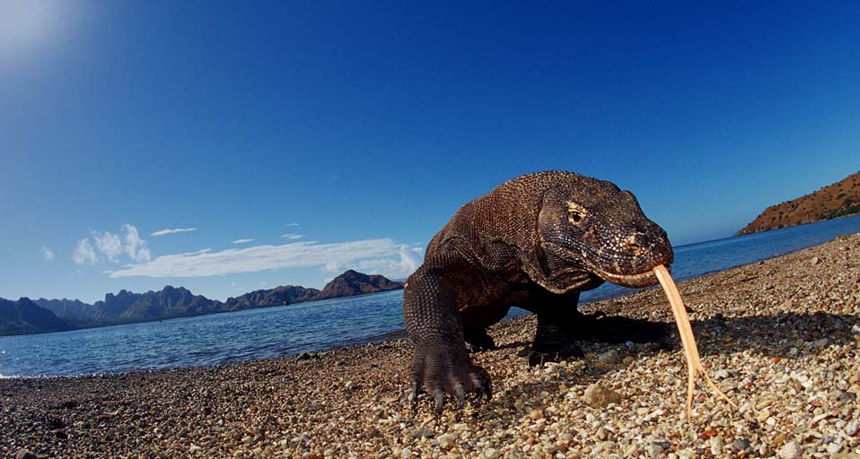

Komodo Islands
Overview

Flores used to get by on Bali’s overflow alone, and thanks to easy transport links, the vast majority of that trickle of travellers landed in the once sleepy west coast port town of Labuanbajo, used it as a spring board to the epic Komodo National Park, and fled. But that trickle has become a river, and the island named 'flowers' by 16th-century Portuguese colonists, who were astonished by the island’s lush, fragrant forests, has become Indonesia’s 'Next Big Thing'.
It makes sense. After all, Flores is the kind of gorgeous that grabs hold of you tightly. Here are empty white sand beaches and bay islands, excellent diving and snorkelling and a skyline of perfectly shaped volcanoes. The 670km serpentine, pot-holed, but steadily improving trans-Flores highway skirts knife-edge ridges that sheer into spectacular river canyons, brushes by dozens of traditional villages, leads to multi-hued volcanic lakes, and connects the east and west coasts. For years this tropical jewel box remained a travellers secret, its gems accessible only to those willing to venture off the beaten track. But thanks to steadily improving transport connections, a maturing tourism industry that has brought increasing comfort and better facilities into remote towns, and enthusiastic word of mouth from fellow travellers, Flores is blooming.
What to do here

Cycling the Dragon
It is amazing to see Komodo dragons up close in their native habitat.

TERRESTRIAL FAUNA
See the terrestrial fauna here.

Marine Fauna
Komodo National Park includes one of the world's richest marine environments.

Do Hiking
This place is a good spot for hiking.